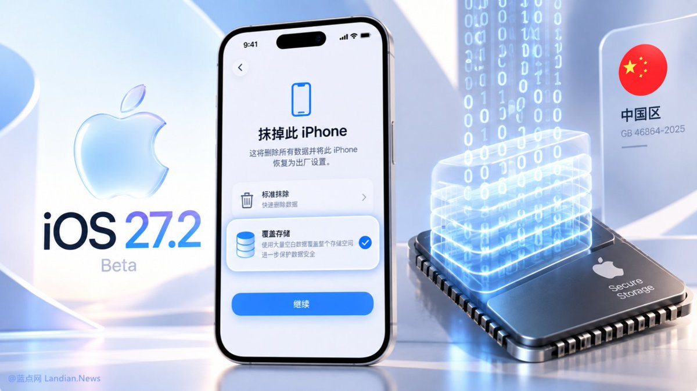

为配套GB 46864-2025《数据安全技术 电子产品信息清除技术要求》强制性国家标准落地实施，指导规范开展电子产品信息清除活动，在中央网信办、工业和信息化部等部门指导下，全国网安标委秘书处组织30余家存储芯片厂商、电子产品制造商、回收经营者和第三方机构等编制了3项网络安全标准实践指南。
其中，《半导体存储介质块擦除技术指引》明确了半导体存储介质块擦除技术的实现方法和具体操作指令，适用于指导半导体存储介质厂商、电子产品厂商等适配、调用和验证块擦除指令。《电子产品回收过程中的信息清除管理指引》明确了信息清除日志格式、内容和回收管理要求，以及信息清除标识的样式和使用方法，适用于指导回收经营者生成信息清除日志、使用信息清除标识、规范信息清除行为与经营活动等。
《移动智能终端信息清除技术指引》明确了手机、平板电脑等移动智能终端信息清除的具体方法、操作过程和验证要求，适用于移动智能终端产品的信息清除功能设计、开发测试，可为电信设备进网许可监管机构等提供参考。上述标准实践指南可在全国网安标委官方网站（https://t.co/0AQiEMuxqL）搜索查询并下载使用。

其中，《半导体存储介质块擦除技术指引》明确了半导体存储介质块擦除技术的实现方法和具体操作指令，适用于指导半导体存储介质厂商、电子产品厂商等适配、调用和验证块擦除指令。《电子产品回收过程中的信息清除管理指引》明确了信息清除日志格式、内容和回收管理要求，以及信息清除标识的样式和使用方法，适用于指导回收经营者生成信息清除日志、使用信息清除标识、规范信息清除行为与经营活动等。
《移动智能终端信息清除技术指引》明确了手机、平板电脑等移动智能终端信息清除的具体方法、操作过程和验证要求，适用于移动智能终端产品的信息清除功能设计、开发测试，可为电信设备进网许可监管机构等提供参考。上述标准实践指南可在全国网安标委官方网站（https://t.co/0AQiEMuxqL）搜索查询并下载使用。

#系统资讯 中国区独占功能：iOS 27.2 Beta 1 新增数据覆写功能，用户尝试抹掉设备时可以使用数据覆写避免数据再被恢复。
这个数据覆写与我们在 PC 上使用的数据覆写类似，都是利用大量空白数据覆盖扇区 / 存储单元，如此操作后想要恢复原始数据基本是不可能的。
为什么是中国区独占呢？因为 GB https://t.co/2GBFgDI2iW
这个数据覆写与我们在 PC 上使用的数据覆写类似，都是利用大量空白数据覆盖扇区 / 存储单元，如此操作后想要恢复原始数据基本是不可能的。
为什么是中国区独占呢？因为 GB https://t.co/2GBFgDI2iW